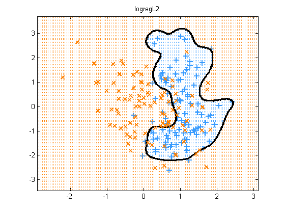
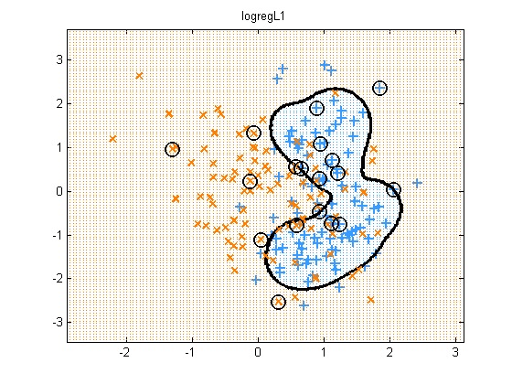
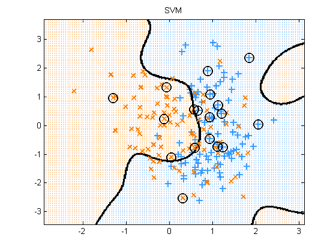
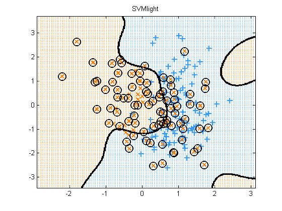

Compare SVM and kernelized logreg on synthetic 2 class data in 2d
Contents
Load Data
Load synthetic data generated from a mixture of 2 Gaussians. Source: http://research.microsoft.com/~cmbishop/PRML/webdatasets/datasets.htm
load bishop2class y = Y(:); %X = mkUnitVariance(centerCols(X));
Set up kernels
We pick hyperparameters that result in a pretty plot
lambda = 2; rbfScale = 0.3; gamma = 1/(2*rbfScale^2); kernelFn = @kernelRbfSigma; Ktrain = kernelFn(X, X, rbfScale); logregArgs.lambda = lambda; logregArgs.regType = 'L2'; logregArgs.kernelFn = @kernelRbfSigma; logregArgs.kernelParam = rbfScale; %[model, bestParams, cvMU, cvSigma] = svmlightFitCV(X, y);
Train and test
for method=1:4 switch method case 1, model = logregFit(X, y, logregArgs); fname = 'logregL2'; predictFn = @(Xtest) logregPredict(model, Xtest); case 2, logregArgs.regType = 'L1'; model = logregFit(X, y, logregArgs); SV = (abs(model.w) > 1e-5); fname = 'logregL1'; predictFn = @(Xtest) logregPredict(model, Xtest); case 3 C = 1/lambda; tic model = svmFit(X, y,'kernel', kernelFn,'C', C, 'kernelParam', rbfScale); toc fname = 'SVM'; predictFn = @(Xtest) svmPredict(model, Xtest); yhat = svmPredict(model, X); trainingErrorsSVM = sum(yhat ~= convertLabelsToPM1(y)) SVsvm = model.svi; case 4 C = 1 / lambda; gamma = 1/(2*rbfScale^2); tic modelLight = svmFit(X, y,'C', C,'kernel', 'rbf', 'kernelParam', gamma, 'fitFn', @svmlightFit); toc SV = modelLight.svi; fname = 'SVMlight'; predictFn = @(Xtest)svmPredict(modelLight, Xtest); yhat = svmPredict(modelLight, X); trainingErrorsSVMlight = sum(yhat ~= convertLabelsToPM1(y)) end % Plot results plotDecisionBoundary(X, y, predictFn, 'symbols', '+x'); if method > 1 plot(X(SV,1), X(SV,2), 'ok', 'linewidth', 1.5, 'markersize', 12); end title(sprintf('%s', fname)) printPmtkFigure(sprintf('svmBinaryClassifDemo%s', fname)) end
iter fEvals stepLen f(w) free
1 2 1.00000e+000 1.36275e+002 136
2 3 4.76638e+000 1.30325e+002 136
3 4 1.86489e+000 1.29142e+002 132
4 5 2.06528e+000 1.28215e+002 125
5 6 1.67158e+000 1.27712e+002 114
6 7 1.51366e+000 1.27486e+002 103
7 8 1.17649e+000 1.27230e+002 94
8 9 1.55917e+000 1.27032e+002 95
9 10 5.98006e-001 1.26930e+002 84
10 11 1.08536e+000 1.26809e+002 82
11 12 7.62576e-001 1.26734e+002 77
12 13 9.81013e-001 1.26633e+002 75
13 14 8.14973e-001 1.26554e+002 72
14 15 8.44431e-001 1.26469e+002 69
15 16 8.52927e-001 1.26421e+002 65
16 17 6.70528e-001 1.26395e+002 58
17 18 4.83381e-001 1.26367e+002 65
18 19 4.87452e-001 1.26345e+002 59
19 20 1.09051e+000 1.26330e+002 57
20 21 4.21565e-001 1.26310e+002 53
21 22 2.68891e-001 1.26292e+002 53
22 23 7.21499e-001 1.26271e+002 52
23 24 7.12906e-001 1.26256e+002 52
24 25 7.27137e-001 1.26236e+002 48
25 26 8.05076e-001 1.26215e+002 45
26 27 3.88489e-001 1.26195e+002 43
27 28 2.88911e-001 1.26184e+002 43
28 29 6.35175e-001 1.26166e+002 43
29 30 9.50138e-001 1.26151e+002 44
30 31 2.36886e-001 1.26137e+002 41
31 32 3.90048e-001 1.26126e+002 41
32 33 4.19600e-001 1.26119e+002 40
33 34 1.36166e-001 1.26114e+002 39
34 35 2.95966e-001 1.26107e+002 40
35 36 3.25788e-001 1.26099e+002 40
36 37 4.91060e-001 1.26091e+002 42
37 38 6.01398e-001 1.26078e+002 41
38 39 8.51382e-001 1.26060e+002 40
39 40 4.91925e-001 1.26049e+002 39
40 41 8.35121e-001 1.26037e+002 39
41 42 2.11063e-001 1.26031e+002 37
42 43 3.14041e-001 1.26025e+002 35
43 44 1.45180e-001 1.26022e+002 35
44 45 2.67797e-001 1.26016e+002 35
45 46 2.30103e-001 1.26012e+002 36
46 47 2.01545e-001 1.26009e+002 36
47 48 2.66903e-001 1.26006e+002 34
48 49 2.57854e-001 1.26004e+002 34
49 50 3.37480e-001 1.25998e+002 32
50 51 4.96917e-001 1.25994e+002 32
51 52 5.27525e-001 1.25993e+002 30
52 53 4.34657e-001 1.25989e+002 33
53 54 1.01038e-001 1.25987e+002 31
54 55 1.55054e-001 1.25985e+002 31
55 56 2.35525e-001 1.25982e+002 31
56 57 2.91128e-001 1.25980e+002 30
57 58 1.06943e-001 1.25980e+002 31
58 59 1.82580e-001 1.25978e+002 31
59 60 1.56690e-001 1.25977e+002 30
60 61 1.68130e-001 1.25976e+002 30
61 62 1.60888e-001 1.25975e+002 31
62 63 1.10652e-001 1.25973e+002 30
63 64 2.22568e-001 1.25971e+002 30
64 65 1.26191e-001 1.25970e+002 29
65 66 1.91114e-001 1.25968e+002 28
66 67 1.74724e-001 1.25968e+002 27
67 68 1.07878e-001 1.25967e+002 25
68 69 1.17485e-001 1.25966e+002 25
69 70 2.06071e-001 1.25964e+002 25
70 71 1.16961e-001 1.25964e+002 25
71 72 1.20359e-001 1.25963e+002 25
72 73 1.61946e-001 1.25962e+002 25
73 74 1.65122e-001 1.25961e+002 25
74 75 1.20473e-001 1.25960e+002 25
75 76 1.35443e-001 1.25960e+002 25
76 78 5.82474e-002 1.25960e+002 23
77 79 4.62764e-002 1.25959e+002 24
78 80 5.55379e-002 1.25959e+002 24
79 81 2.53578e-002 1.25959e+002 24
80 82 6.81443e-002 1.25959e+002 24
81 83 8.01147e-002 1.25958e+002 24
82 84 6.59915e-002 1.25958e+002 23
83 85 2.43867e-002 1.25958e+002 23
84 86 2.65438e-002 1.25958e+002 23
85 87 2.74909e-002 1.25958e+002 23
86 88 3.94566e-002 1.25958e+002 23
87 89 3.62106e-002 1.25957e+002 23
88 90 3.20973e-002 1.25957e+002 23
89 91 2.98375e-002 1.25957e+002 23
90 92 4.98534e-002 1.25957e+002 23
91 93 9.65608e-002 1.25957e+002 24
92 94 5.07302e-002 1.25957e+002 22
93 95 1.75695e-002 1.25957e+002 22
94 96 2.56892e-002 1.25956e+002 22
95 97 1.30764e-002 1.25956e+002 22
96 98 9.41703e-003 1.25956e+002 21
97 99 8.38892e-003 1.25956e+002 21
98 100 4.04880e-002 1.25956e+002 21
99 101 2.39666e-002 1.25956e+002 21
100 102 2.46935e-002 1.25956e+002 21
101 103 3.28878e-002 1.25956e+002 21
102 104 4.20899e-002 1.25956e+002 21
103 105 8.90945e-002 1.25956e+002 21
104 106 8.55041e-002 1.25956e+002 21
105 107 5.34814e-002 1.25956e+002 21
106 108 1.71747e-002 1.25956e+002 20
107 109 3.25233e-002 1.25955e+002 20
108 110 2.34248e-002 1.25955e+002 21
109 111 2.48683e-002 1.25955e+002 20
110 112 6.58297e-003 1.25955e+002 20
111 113 9.39593e-003 1.25955e+002 20
112 114 8.84667e-003 1.25955e+002 20
113 115 1.36805e-002 1.25955e+002 20
114 116 1.48834e-002 1.25955e+002 20
115 117 5.39284e-003 1.25955e+002 20
116 118 5.62509e-003 1.25955e+002 19
117 119 5.64668e-003 1.25955e+002 19
118 120 6.81623e-003 1.25955e+002 19
119 121 6.32618e-003 1.25955e+002 19
120 122 4.26746e-003 1.25955e+002 19
121 123 3.80227e-003 1.25955e+002 19
122 124 5.56014e-003 1.25955e+002 19
123 125 9.37206e-003 1.25955e+002 19
124 126 1.18451e-002 1.25955e+002 19
125 127 8.74707e-003 1.25955e+002 19
126 128 4.11133e-003 1.25955e+002 20
127 129 3.25552e-003 1.25955e+002 20
128 130 5.00456e-003 1.25955e+002 20
129 131 8.09769e-003 1.25955e+002 20
130 132 9.44084e-003 1.25955e+002 20
131 133 3.22353e-003 1.25955e+002 19
132 134 2.35226e-003 1.25955e+002 19
Function value change too small
Elapsed time is 9.096157 seconds.
trainingErrorsSVM =
35
Elapsed time is 0.160778 seconds.
trainingErrorsSVMlight =
35
   